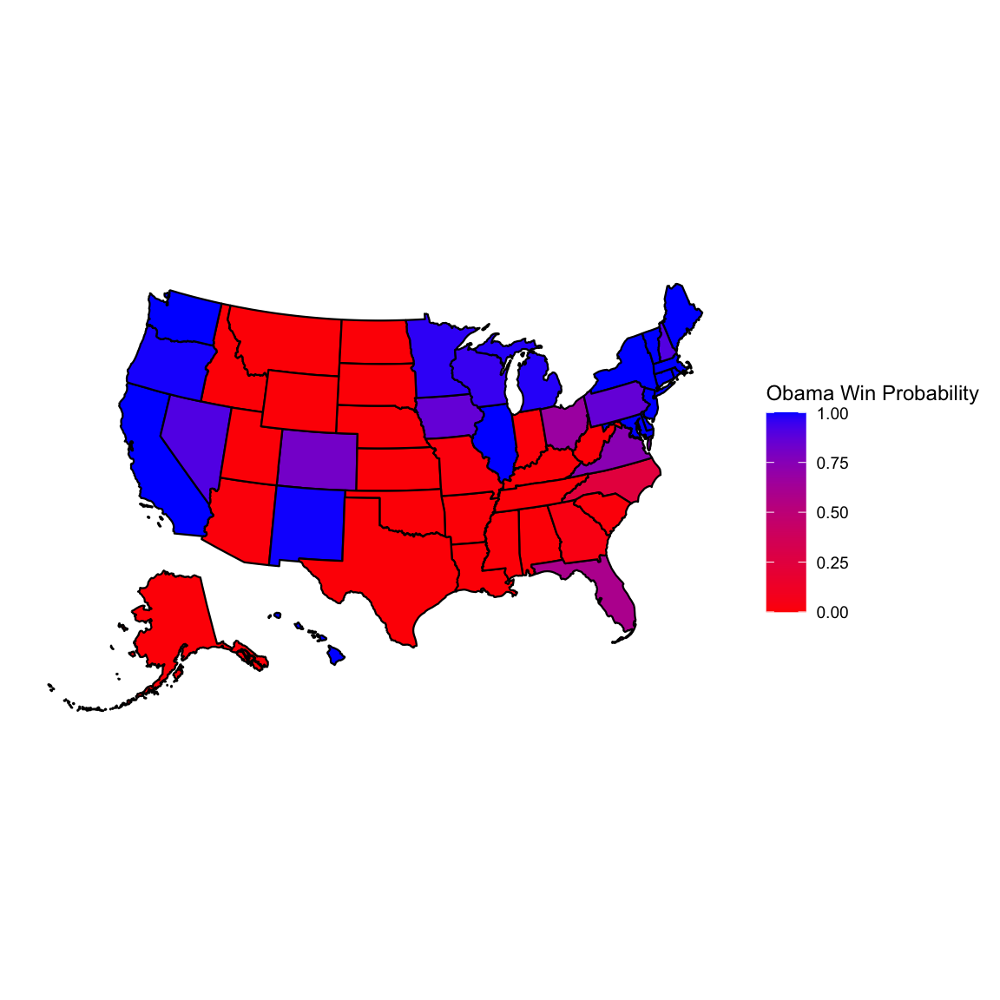
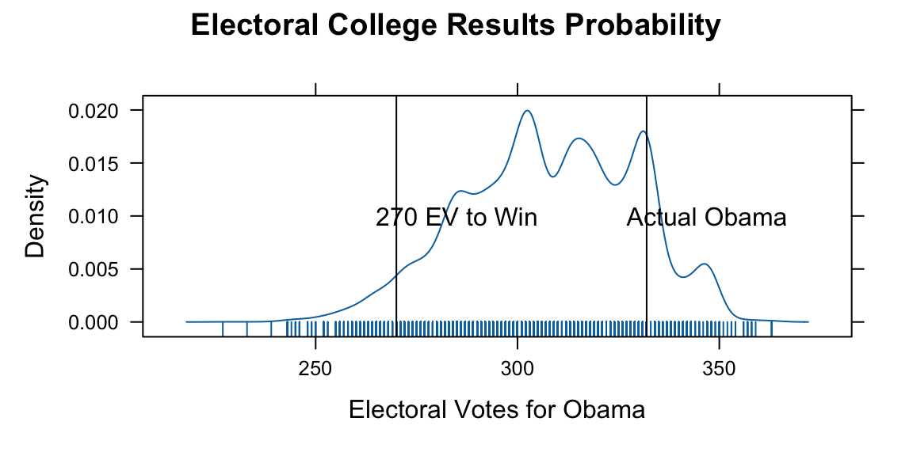
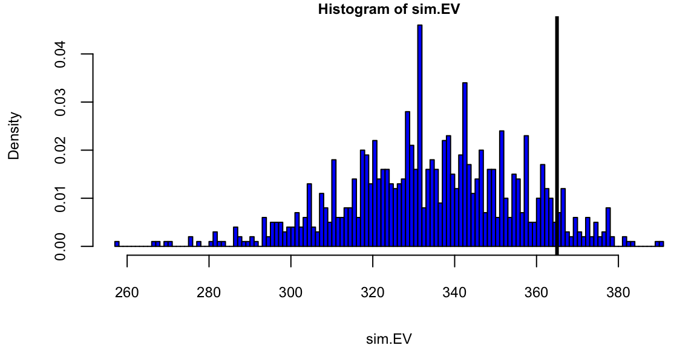

library(plyr)
# Source: "http://www.electoral-vote.com/evp2012/Pres/pres_polls.csv"
election.2012 = read.csv("../../data/pres_polls.csv")
# Remove a pollster: elect2012 <- election.2012[!grepl('Rasmussen', election.2012$Pollster),]
elect2012 <- election.2012
# Aggregrate the data
elect2012 <- ddply(elect2012, .(state), subset, Day == max(Day))
elect2012 <- ddply(elect2012, .(state), summarise, R.pct = mean(GOP), O.pct = mean(Dem), EV = mean(EV))15 Theory of AI
We use observed input-output pairs \((x_i,y_i)\) to learn a function \(f\) that maps \(x_i\) to \(y_i\). The goal is to learn a function \(f\) that generalizes well to unseen data. We can measure the quality of a function \(f\) by its risk, which is the expected loss of \(f\) on a new input-output pair \((x,y)\):
\[
R(f) = \sum_{i=1}^N \left [ L(f(x_i),y_i) \right ] + \lambda \Omega(f)
\] where \(L\) is a loss function, \(\Omega\) is a regularization function, and \(\lambda\) is a regularization parameter. The loss function \(L\) measures the difference between the output of the function \(f\) and the true output \(y\). The regularization function \(\Omega\) measures the complexity of the function \(f\). The regularization parameter \(\lambda\) controls the tradeoff between the loss and the complexity.
When \(y\in R\) is numeric, we use the squared loss \(L(f(x),y) = (f(x)-y)^2\). When \(y\in \{0,1\}\) is binary, we use the logistic loss \(L(f(x),y) = \log(1+\exp(-yf(x)))\).
There is a duality between using regularization term and assuming a prior distribution over the parameters of the model \(f\). The regularization parameter \(\lambda\) is related to the variance of the prior distribution. When \(\lambda=0\), the function \(f\) is the maximum likelihood estimate of the parameters. When \(\lambda\) is large, the function \(f\) is the prior mean of the parameters. When \(\lambda\) is infinite, the function \(f\) is the prior mode of the parameters. When \(\lambda\) is negative, the function \(f\) is the posterior mean of the parameters. When \(\lambda\) is very negative, the function \(f\) is the posterior mode of the parameters.
The goal is to find a function \(f\) that minimizes the risk \(R(f)\). This is called the empirical risk minimization problem. Finding minimum is a difficult problem when the risk function \(R(f)\) is non-convex. In practice, we often use gradient descent to find a local minimum of the risk function \(R(f)\).
What makes a good model? If the goal is prediction, then the model is as good as its prediction. The easiest way to visualize the quality of the prediction is to plot \(y\) vs \(\hat y\). In the case of the linear regression model, the prediction interval is defined by \[ s\sqrt{1+\frac{1}{n}+\frac{(x-\bar x)^2}{\sum_{i=1}^n(x_i-\bar x)^2}} \] where \(s\) is the standard deviation of the residuals. The prediction interval is the confidence interval for the prediction. The prediction interval is wider than the confidence interval because it includes the uncertainty in the prediction.
The bias-variance tradeoff is a fundamental property of statistical models. The bias is the difference between the expected value of the prediction and the true value \(y-\hat y\). The variance is the variance of the prediction. The bias-variance tradeoff says that the bias and variance are inversely related. A model with high bias has low variance and a model with low bias has high variance. The bias-variance tradeoff is a consequence of the fact that the expected value of the prediction is the sum of the bias and the variance.
\[
MSE = E(y-\hat y)^2 = E(y-\mathbb{E}(\hat y))^2 + E(\mathbb{E}(\hat y)-\hat y)^2
\] The bias-variance tradeoff is a consequence of the fact that the expected value of the prediction is the sum of the bias and the variance.
15.1 Risk Bounds
The classic bias-variance tradeoff is given by the MSE risk bound \[ R(\theta,\hat \theta) = E_{y|\theta} \left [ \Vert \hat \theta - \theta \Vert^2 \right ] = \Vert \hat \theta - \theta \Vert^2 + E_{y|\theta} \left [ \Vert \hat \theta - \mathbb{E}(\hat \theta) \Vert^2 \right ] \]
In a case of multiple parameters, the Stein bound is \[ R(\theta,\hat \theta_{JS}) < R(\theta,\hat \theta_{MLE}) \;\;\; \forall \theta \in \mathbb{R}^p, \;\;\; p \geq 3. \] In an applied problem the gap in risk between MLE and JS estimators can be large. For example, in the normal means problem with \(p=100\) and \(n=100\), the risk of the MLE is \(R(\theta,\hat \theta_{MLE}) = 100\) while the risk of the JS estimator is \(R(\theta,\hat \theta_{JS}) = 1.5\). The JS estimator is 67 times more efficient than the MLE. The JS estimator is also minimax optimal in the sense that it attains the minimax risk bound for the normal means problem. The minimax risk bound is the smallest risk that can be attained by any estimator.
JS is a specific estimate and it motivates the ridge estimator. The ridge estimator is a shrinkage estimator with the penalty function being the squared norm of the parameter vector. The ridge estimator is \[ \hat \theta_{ridge} = \left ( \frac{1}{n} X^T X + \lambda I \right )^{-1} \frac{1}{n} X^T y \] where \(\lambda\) is the regularization parameter.
15.2 Sparsity
Even thresholding can beat MLE, when the signal is sparse. The thresholding estimator is \[ \hat \theta_{thr} = \left \{ \begin{array}{ll} \hat \theta_i & \mbox{if} \; \hat \theta_i > \sqrt{2 \ln p} \\ 0 & \mbox{otherwise} \end{array} \right . \]
Sparse signal detection provides a challenge to statistical methodology; consider the classical normal means inference problem. Suppose that we observe data from the probability model \(( y_i | \theta_i ) \sim N( \theta_i,1)\). We wish to provide an estimator \(\hat y_{hs}\) for the vector of normal means \(\theta = ( \theta_1, \ldots , \theta_p )\). Sparsity occurs when a large portion of the parameter vector contains zeroes. The ’’ultra-sparse`` or “nearly black” vector case occurs when \(p_n\), denoting the number of non-zero parameter values, and for \(\theta \in l_0 [ p_n]\), which denotes the set \(\# ( \theta_i \neq 0 ) \leq p_n\) where \(p_n = o(n)\) where \(p_n \rightarrow \infty\) as \(n \rightarrow \infty\).
The classic James-Stein shrinkage rule, \(\hat y_{js}\), uniformly dominates the traditional sample mean estimator, \(\hat{\theta}\), for all values of the true parameter \(\theta\). In classical MSE risk terms: \[ R(\hat y_{js}, \theta) \defeq E_{y|\theta} {\Vert \hat y_{js} - \theta \Vert}^2 < p = E_{y|\theta} {\Vert y - \theta \Vert}^2, \;\;\; \forall \theta \] For a sparse signal, however, \(\hat y_{js}\) performs poorly when the true parameter is an \(r\)-spike where \(\theta_r\) has \(r\) coordinates at \(\sqrt{p/r}\) and the rest set at zero with norm \({\Vert \theta_r \Vert}^2 =p\).
The classical risk satisfies \(R \left ( \hat y_{js} , \theta_r \right ) \geq p/2\) where the simple thresholding rule \(\sqrt{2 \ln p}\) performs with risk \(\sqrt{\ln p}\) in the \(r\)-spike sparse case even though it is inadmissible in MSE for a non-sparse signal.
The horseshoe estimator, \(\hat y_{hs}\), was proposed to provide a Bayes rule that inherits good MSE properties but also simultaneously provides asymptotic minimax estimation risk for sparse signals. HS estimator uniformly dominates the traditional sample mean estimator in MSE and has good posterior concentration properties for nearly black objects. Specifically, the horseshoe estimator attains asymptotically minimax risk rate \[ \sup_{ \theta \in l_0[p_n] } \; \mathbb{E}_{ y | \theta } \|\hat y_{hs} - \theta \|^2 \asymp p_n \log \left ( n / p_n \right ). \] The ``worst’’ \(\theta\) is obtained at the maximum difference between \(\left| \hat y_{hs} - y \right|\) where \(\hat y_{hs} = \mathbb{E}(\theta|y)\) can be interpreted as a Bayes posterior mean (optimal under Bayes MSE).
15.3 Ensemble Models and \(1/N\) Rule
In high dimensions, when I have large number of predictive models that generate uncorrelated predictions, the optimal approach to generate a prediction is to average out predictions from those individual models/ weak predictors. This is called the \(1/N\) rule. The variance in the prediction is reduced by a factor of \(N\) when we average out \(N\) uncorrelated predictions. \[ \mbox{Var} \left ( \frac{1}{N} \sum_{i=1}^N \hat y_i \right ) = \frac{1}{N^2} \mbox{Var} \left ( \hat y_i \right ) + \frac{2}{N^2} \sum_{i \neq j} \mbox{Cov} \left ( \hat y_i, \hat y_j \right ) \] In high dimensions it relatively easy to find uncorrelated predictors and those techniques prove to lead to a winning solution in many machine learning competitions. The \(1/N\) rule is optimal due to exchangeability of the weak predictors, see Polson, Sokolov, et al. (2017)
In the case of classification
The predictive rule is often represented by a mathematical model, such as a linear regression model or a neural network. The model is trained using historical data, which consists of observed inputs and outputs \((x_1,y_1),\ldots, (x_n,y_n)\).
The model is then used to predict the output \(y\) for new inputs \(x\). The accuracy of the model is evaluated using a performance metric, such as the mean squared error or the mean absolute error. The model is then updated and retrained using new data to improve its accuracy. This process is repeated until the model achieves the desired level of accuracy.
Here are a few important considerations when building predictive models:
1. Model Selection:
- Choosing the right model for the relationship between \(x\) and \(y\) is crucial. If the chosen model is too simple, it might underfit the data and fail to capture important relationships. Conversely, a model that is too complex might overfit the data and fail to generalize to unseen examples.
- This problem becomes even more complex when dealing with non-linear relationships, high-dimensional data, or noisy data.
2. Overfitting and Underfitting:
- Overfitting occurs when the model fits the training data too closely, capturing not only the true underlying relationship but also random noise. This can lead to poor performance on unseen data.
- Underfitting occurs when the model is too simple and fails to capture the true relationship between x and y. This can also lead to poor prediction accuracy.
3. Data Quality and Quantity: The accuracy of predictions heavily relies on the quality and quantity of the available data. If the data is noisy, inaccurate, or incomplete, it can lead to misleading predictions.A sufficient amount of data is also crucial to ensure the model can learn the underlying relationship effectively. Insufficient data can result in underfitting and poor generalization.
4. Feature Engineering: Raw input data often needs to be transformed and processed into features that are relevant and informative for the prediction task. This process, known as feature engineering, can significantly impact the performance of the model. Selecting the right features and extracting them effectively can be a challenging task, requiring domain knowledge and expertise.
5. Model Explainability: In many applications, it is crucial to understand how the model arrives at its predictions. This is particularly important in areas like healthcare or finance, where transparency and interpretability are essential. Some models, particularly complex ones like deep neural networks, can be difficult to interpret, making it challenging to understand the rationale behind their predictions.
6. Computational Cost: Training and using prediction models can be computationally expensive, especially for complex models with large datasets. This can limit their applicability in resource-constrained environments. Finding a balance between model complexity, accuracy, and computational cost is critical for practical applications.
7. Ethical Considerations: Predictions can have significant real-world consequences, raising ethical concerns about bias, fairness, and potential misuse. It is crucial to consider the potential harms and unintended consequences of predictions and implement safeguards to mitigate them.
Addressing these challenges requires careful consideration of the specific problem, selection of appropriate techniques, and continuous evaluation and improvement of the prediction model.
There are several different types of prediction tasks, each with its own characteristics and applications. Here are some of the most common ones:
1. Regression: Output \(y\) is a continuous variable (e.g., price of a house, travel time to my home).
2. Binary Classification: Output \(y\) takes one of two values (e.g., spam or not spam, fraudulent transaction or not fraudulent) and we usually encode them as zero and one, \(y \in \{0,1\}\).
3. Multi-Class Classification: Output \(y\) takes more than two values (e.g., type of flower, type of cancer) and we usually encode those categories as integers, \(y \in \{0,1,\ldots, K\}\).
4. Multi-Label Classification: Output \(y\) takes more than two values and each data point can belong to multiple categories simultaneously (e.g., topics of a document, objects in an image), \(y \subset \{0,1,\ldots, K\}\).
5. Ranking: Output \(y\) represents ranking of a set of data points based on a specific criterion (e.g., relevance of a document to a query, quality of a product).
6. Clustering: There is no \(y\) variable involved and the goal is to combine observed \(x\) vectors into groups based on their similarities (e.g., segmenting customers into different groups based on their purchasing behavior, identifying different communities in a social network).
15.3.1 Prediction Accuracy
After we fit our model and find the optimal value of the parameter \(\theta\), denoted by \(\hat \theta\), we need to evaluating the accuracy of a predictive model. It involves comparing the model’s predictions to actual outcomes. We can simply use the value of the loss function from the training step to evaluate model’s predictive power. However, this only tells us how well the model fits the training data. It doesn’t tell us how well the model will perform on unseen data. To evaluate the model’s performance on unseen data, we need to use a different approach.
The most common approach is to split the data into training and test sets. The training set is used to train the model, while the test set is used to evaluate its performance. This approach is known as the train-test split. It is a simple and effective way to evaluate how well model predicts unseen for unseen inputs.
Another approach is to use cross-validation. It involves splitting the data into smaller subsets and using them to train and test the model multiple times. When our sample size is small, this allows for a more robust estimate of the model’s performance than simply splitting the data into a single training and test set. For small data sets, simple train-test split approach will be sensitive to choice of test samples, thus the estimated predicted performance will be unstable (high variance). Cross-validation helps to reduce this variance by averaging the performance across multiple folds. This makes the performance estimate more robust and less sensitive to the choice of test samples.
Cross-validation involves several steps:
- Split the data: The data is randomly divided into \(k\) equal-sized chunks (folds).
- Train and test the model: For each fold, the model is trained on \(k-1\) folds and tested on the remaining fold. This process is repeated \(k\) times, ensuring each fold is used for testing once.
- Evaluate the model: The performance of the model is evaluated on each fold using a chosen metric, such as accuracy, precision, recall, or F1 score.
- Report the average performance: The average of the performance metrics across all k folds is reported as the final estimate of the model’s performance.
A common choice for \(k\) is 5 or 10. When \(K=n\), this is known as leave-one-out cross-validation. This method can be computationally expensive but is less likely to overfit the data. Stratified cross-validation ensures that each fold contains approximately the same proportion of each class as in the entire dataset. This is important for imbalanced datasets where one class is significantly larger than the others.
Notice, that cross-validation requires re-training the model multiple times, which can be computationally expensive. Thus, for large datasets, we typically prefer simple train-test split. However, for small datasets, cross-validation can provide a more robust estimate of the model’s performance.
Either method is limited to evaluating the model’s performance on data that is available to the modeler. What if we start using our model on data that is different from the training and test sets? Unlike in physics, when a model represents a law that is universal, in data science, we are dealing with data that is generated by a process that is not necessarily universal. For example, if we are building a model to predict the price of a house, we can train and test the model on data from a specific city. However, if we start using the model to predict the price of a house in a different city, the model might not perform as well. This is because the data from the new city might be different from the data used to train and test the model. This is known as the problem of generalization. It refers to the ability of a model to perform well on data that is different from the training and test sets.
Evaluation Metrics for Regression
There are several metrics that can be used to evaluate the performance of regression models. We can simply use the same function as we use for fitting the model, e.g. least squares \[ \text{MSE} = \dfrac{1}{m}\sum_{i=1}^n (y_i -\hat y_i)^2, \] here \(\hat y_i\) is the predicted value of the i-th data point by the model \(\hat y_i = f(x_i,\hat\theta)\) and \(m\) is the total number of data points used for the evaluation. This metric is called the Mean Squared Error (MSE). It is the average squared difference between the actual and predicted values. Lower MSE indicates better model performance, as it means the model’s predictions are closer to the actual values.
A slight variation of this metric is Root Mean Squared Error (RMSE). This is the square root of MSE and is also commonly used due to its units being the same as the target variable. \[ \text{RMSE} = \sqrt{\text{MSE}}. \] However, MSE is sensitive to outliers, as it squares the errors, giving more weight to large errors. This can lead to misleading results when the data contains outliers.
Median Absolute Error (MAE) solves the sensetivity to the outliers problem. It is the median of the absolute errors, providing a more robust measure than MAE for skewed error distributions \[ \text{MAE} = \dfrac{1}{m}\sum_{i=1}^n |y_i -\hat y_i|. \] A variation of it is the Mean Absolute Percentage Error (MAPE), which is the mean of the absolute percentage errors \[ \text{MAPE} = \dfrac{1}{m}\sum_{i=1}^n \left | \dfrac{y_i -\hat y_i}{y_i} \right |. \]
Alternative way to measure the predictive quility is to use the coefficient of determination, also known as the R-squared value, which measures the proportion of variance in the target variable that is explained by the model. Higher R-squared indicates better fit. However, R-squared can be misleading when comparing models with different numbers of features. R-squared is defined as follows \[ R^2 = 1 - \dfrac{\sum_{i=1}^n (y_i -\hat y_i)^2}{\sum_{i=1}^n (y_i -\bar y_i)^2}, \] where \(\bar y_i\) is the mean of the target variable. R-squared is a relative measure of fit, so it can be used to compare different models. However, it is not an absolute measure of fit, so it cannot be used to determine whether a model is good or bad. It is also sensitive to the number of features in the model, so it cannot be used to compare models with different numbers of features.
Finally, we can use graphics to evaluate the model’s performance. For example, we can scatterplot the actual and predicted values of the target variable to visually compare them. We can also plot the histogram of a boxplot of the residuals (errors) to see if they are normally distributed.
Evaluation Metrics for Classification
Accuracy is the most fundamental metric used to evaluate models. It is defined as the ratio of the number of correct predictions to the total number of predictions. The formula is given by \[\text{Accuracy} = \frac{\text{TP+TN}}{\text{TP+TN+FP+FN}},\] where TP, TN, FP, and FN are the numbers of true positives, true negatives, false positives, and false negatives, respectively. However, it can be misleading for imbalanced datasets where one class is significantly larger than others. For example, if 95% of the data belongs to one class, a model that always predicts this class will be 95% accurate, even though it’s not very useful.
A more comprehensive understanding of model performance can be achieved by calculaitng the sensitivity (a.k.a precision) and specificity (a.k.a. recall) as well as confusion matrix discussed in Section 2.5. The confusion matrix is
| Actual/Predicted | Positive | Negative |
|---|---|---|
| Positive | TP | FN |
| Negative | FP | TN |
Precision measures the proportion of positive predictions that are actually positive. It is useful for evaluating how good the model is at identifying true positives. Recall measures the proportion of actual positives that are correctly identified by the model. It is useful for evaluating how good the model is at not missing true positives.
Then we can use those to calculate F1 Score which is is a harmonic mean of precision and recall, providing a balanced view of both metrics. Higher F1 score indicates better overall performance. If misclassifying certain instances is more costly than others, weighted metrics account for these different costs. For imbalanced datasets, metrics like F1 score or balanced accuracy are important to avoid misleading interpretations.
Sometimes, we use multiple metrics to get a comprehensive assessment of the model’s performance. Additionally, consider comparing the model’s performance to a baseline model or other existing models for the same task. Sometimes, it is hard to beat a “coin flip” classification model, when the model predicts the class randomly with equal probability. In regression, a simple baseline model is \(f(x_i) = \bar y\), which is the mean of the target variable.
15.3.2 Some Examples of Prediction Problems
Example 15.1 (Obama Elections) Elections 2012: Bayes and Nate Silver
knitr::kable(elect2012[1:25,], caption = "Election 2012 Data",longtable=TRUE)
knitr::kable(elect2012[26:51,], caption = "Election 2012 Data",longtable=TRUE)| state | R.pct | O.pct | EV |
|---|---|---|---|
| Alabama | 61 | 38 | 9 |
| Alaska | 55 | 42 | 3 |
| Arizona | 54 | 44 | 11 |
| Arkansas | 61 | 37 | 6 |
| California | 38 | 59 | 55 |
| Colorado | 47 | 51 | 9 |
| Connecticut | 40 | 58 | 7 |
| D.C. | 7 | 91 | 3 |
| Delaware | 40 | 59 | 3 |
| Florida | 49 | 50 | 29 |
| Georgia | 53 | 45 | 16 |
| Hawaii | 28 | 71 | 4 |
| Idaho | 65 | 33 | 4 |
| Illinois | 41 | 57 | 20 |
| Indiana | 54 | 44 | 11 |
| Iowa | 47 | 52 | 6 |
| Kansas | 60 | 38 | 6 |
| Kentucky | 61 | 38 | 8 |
| Louisiana | 58 | 41 | 8 |
| Maine | 41 | 56 | 4 |
| Maryland | 37 | 62 | 10 |
| Massachusetts | 38 | 61 | 11 |
| Michigan | 45 | 54 | 16 |
| Minnesota | 45 | 53 | 10 |
| Mississippi | 56 | 44 | 6 |
| state | R.pct | O.pct | EV | |
|---|---|---|---|---|
| 26 | Missouri | 54 | 44 | 10 |
| 27 | Montana | 55 | 41 | 3 |
| 28 | Nebraska | 61 | 38 | 5 |
| 29 | Nevada | 46 | 52 | 6 |
| 30 | New Hampshire | 46 | 52 | 4 |
| 31 | New Jersey | 41 | 58 | 14 |
| 32 | New Mexico | 43 | 53 | 5 |
| 33 | New York | 36 | 63 | 29 |
| 34 | North Carolina | 51 | 48 | 15 |
| 35 | North Dakota | 59 | 39 | 3 |
| 36 | Ohio | 48 | 50 | 18 |
| 37 | Oklahoma | 67 | 33 | 7 |
| 38 | Oregon | 43 | 54 | 7 |
| 39 | Pennsylvania | 47 | 52 | 20 |
| 40 | Rhode Island | 36 | 63 | 4 |
| 41 | South Carolina | 55 | 44 | 9 |
| 42 | South Dakota | 58 | 40 | 3 |
| 43 | Tennessee | 60 | 39 | 11 |
| 44 | Texas | 57 | 41 | 38 |
| 45 | Utah | 73 | 25 | 6 |
| 46 | Vermont | 31 | 67 | 3 |
| 47 | Virginia | 48 | 51 | 13 |
| 48 | Washington | 42 | 56 | 12 |
| 49 | West Virginia | 62 | 36 | 5 |
| 50 | Wisconsin | 46 | 53 | 10 |
| 51 | Wyoming | 69 | 28 | 3 |
Run the Simulation and plot probabilities by state
prob.Obama <- function(mydata) {
p <- rdirichlet(1000, 500 * c(mydata$R.pct, mydata$O.pct, 100 - mydata$R.pct -
mydata$O.pct)/100 + 1)
mean(p[, 2] > p[, 1])
}
win.probs <- ddply(elect2012, .(state), prob.Obama)
win.probs$Romney <- 1 - win.probs$V1
names(win.probs)[2] <- "Obama"
win.probs$EV <- elect2012$EV
win.probs <- win.probs[order(win.probs$EV), ]
rownames(win.probs) <- win.probs$statelibrary(usmap)
plot_usmap(data = win.probs, values = "Obama") +
scale_fill_continuous(low = "red", high = "blue", name = "Obama Win Probability", label = scales::comma) + theme(legend.position = "right")
We use those probabilities to simulate the probability of Obama winning the election. First, we calculate the probability of Obama having >270 EV or more
sim.election <- function(win.probs) {
winner <- rbinom(51, 1, win.probs$Obama)
sum(win.probs$EV * winner)
}
sim.EV <- replicate(10000, sim.election(win.probs))
oprob <- sum(sim.EV >= 270)/length(sim.EV)
oprob 0.96library(lattice)
# Lattice Graph
densityplot(sim.EV, plot.points = "rug", xlab = "Electoral Votes for Obama",
panel = function(x, ...) {
panel.densityplot(x, ...)
panel.abline(v = 270)
panel.text(x = 285, y = 0.01, "270 EV to Win")
panel.abline(v = 332)
panel.text(x = 347, y = 0.01, "Actual Obama")
}, main = "Electoral College Results Probability")
Results of recent state polls in the 2008 United States Presidential Election between Barack Obama and John McCain.
# Source: LearnBayes library
#| fig-height: 6
election.2008 = read.csv("../../data/election2008.csv")
data(election.2008)
attach(election.2008)
## Dirichlet simulation
prob.Obama = function(j)
{
p=rdirichlet(5000,500*c(M.pct[j],O.pct[j],100-M.pct[j]-O.pct[j])/100+1)
mean(p[,2]>p[,1])
}
## sapply function to compute Obama win prob for all states
Obama.win.probs=sapply(1:51,prob.Obama)
## sim.EV function
sim.election = function()
{
winner = rbinom(51,1,Obama.win.probs)
sum(EV*winner)
}
sim.EV = replicate(1000,sim.election())
## histogram of simulated election
hist(sim.EV,min(sim.EV):max(sim.EV),col="blue",prob=T)
abline(v=365,lwd=3) # Obama received 365 votes
text(375,30,"Actual \n Obama \n total")
There are many ways to build a predictive rule \(f(x)\) that estimates the conditional mean of the output y, given input x. Here are some of the most common approaches:
1. Linear Regression:
- This is a simple and widely used method that assumes a linear relationship between the input and output variables. The model is represented as:
\[ y = F(x) = \beta_0 + \beta_1x + \epsilon \]
where \(\beta_0\) and \(\beta_1\) are the intercept and slope coefficients, respectively, and \(\epsilon\) is the error term. The coefficients are estimated by minimizing the squared error between the predicted and actual values of $\(y\).
Advantages:
- Simple to interpret and implement.
- Efficient for large datasets.
Disadvantages:
- Assumes a linear relationship between the input and output variables, which might not be true for all datasets.
- Sensitive to outliers.
2. Polynomial Regression:
- This is an extension of linear regression that allows for non-linear relationships between the input and output variables. The model is represented as:
\[ y = F(x) = \beta_0 + \beta_1x + \beta_2x² + ... + \beta_k x_k + \epsilon \]
where k is the degree of the polynomial. The coefficients are estimated by minimizing the squared error between the predicted and actual values of y.
Advantages:
- More flexible than linear regression and can capture non-linear relationships.
Disadvantages:
- Can be prone to overfitting, especially for high-degree polynomials.
- More complex to interpret than linear regression.
3. Support Vector Regression (SVR):
- This is a non-linear regression method that uses kernel functions to map the input data to a higher-dimensional space. The model is represented as:
\[ y = F(x) = \sum \alpha_i K(x, x_i) + b \]
where \(\alpha_i\) are the Lagrange multipliers, \(K(x, x_i)\) is the kernel function, and b is the bias term. The coefficients \(\alpha_i\) and b are estimated by minimizing a loss function that penalizes both large errors and model complexity.
Advantages:
- Can capture non-linear relationships without overfitting.
- Robust to outliers.
Disadvantages:
- Can be computationally expensive for large datasets.
- Not as easy to interpret as linear regression.
4. Random Forest Regression:
- This is an ensemble method that combines the predictions of multiple decision trees. Each decision tree is built on a random subset of the data and makes predictions based on the input features. The final prediction is the average of the predictions from all trees.
Advantages:
- Can capture complex relationships between the input and output variables.
- Robust to outliers.
Disadvantages:
- Can be computationally expensive to train.
- Not as easy to interpret as individual decision trees.
5. Neural Networks:
- These are powerful models that can capture complex relationships between the input and output variables. They consist of multiple layers of interconnected nodes, which learn to process information and make predictions.
Advantages:
- Can capture complex relationships that other methods might miss.
- Highly flexible and can be applied to a wide range of problems.
Disadvantages:
- Can be prone to overfitting if not properly trained.
- Difficult to interpret and understand how they make predictions.
Choosing the best method depends on several factors:
- The size and nature of your dataset.
- The complexity of the relationship between the input and output variables.
- The desired level of interpretability.
- The available computational resources.
It is important to experiment with different methods and compare their performance on your specific dataset before choosing the best model for your task.